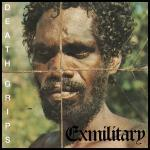

Music Reviews
-

Boris Heavy Rocks/Attention Please
With Heavy Rocks and Attention Please, the multifaceted Boris lays out a divergent set of albums and somehow becomes more multifaceted.
Sean Caldwell reviews... -
Jamie Woon Mirrorwriting
Will debut album be a boon for Woon or is he a goon who can't hold a tune? Joe Iliff promises to stop the Woon rhymes... soon... maybe in June.
He didn't come up with that himself, but wishes he had... -

Death Grips Exmilitary
This mysterious and uncompromising Zach Hill hip-hop side project merges avant-rap, hardcore punk, and harsh noise.
Stephen Wragg reviews... -

Planningtorock W
Coming with endorsements from The Knife and LCD Soundsystem, W is the second album by Berlin-based electronica artist Planningtorock, which sees her crafting sophisticated electro-pop that's very much removed from the scattershot lunacy of her debut.
Mark Davison is planningtoincludeitonhisalbumsoftheyearlist... -
Thurston Moore Demolished Thoughts
Beck produces Thurston Moore’s acoustic solo outing, Demolished Thoughts, but don’t call it a “sea change.”
Sean Caldwell reviews... -
Owl City All Things Bright and Beautiful
This is an insult to the ears. I did not know music could be this bad. Rebecca Black is a better songwriter.
Andrew Baer wonders if these frequent nosebleeds are a result of brain damage... -

Joseph Arthur Graduation Ceremony
The eclectic singer-songwriter veers off his idiosyncratic tendencies with a spare record that balances a full orchestra with a densely layered production.
Juan Edgardo Rodriguez reviews... -
Ringo Deathstarr Colour Trip
Glitchy shoegaze, noisy dream pop — call this what you will, but Ringo Deathstarr are reveling in the intricacies of overly loud guitars played with the reverb turned up several times over.
Matt Montgomery reviews... -

Amor de Dias Street of the Love of Days
Alasdair MacLean takes a breather from the Clientele to form Amor de Días, a lush, bucolic side project with Spanish singer Lupe Núñez-Fernández
Angel Aguilar reviews... -

Art Brut Brilliant! Tragic!
Once again blessed by producer Frank Black, the sardonic punks turn in a muckier varnish of guitars to illustrate this new batch of ill-fated accounts.
Juan Edgardo Rodríguez questions the concept of maturity...